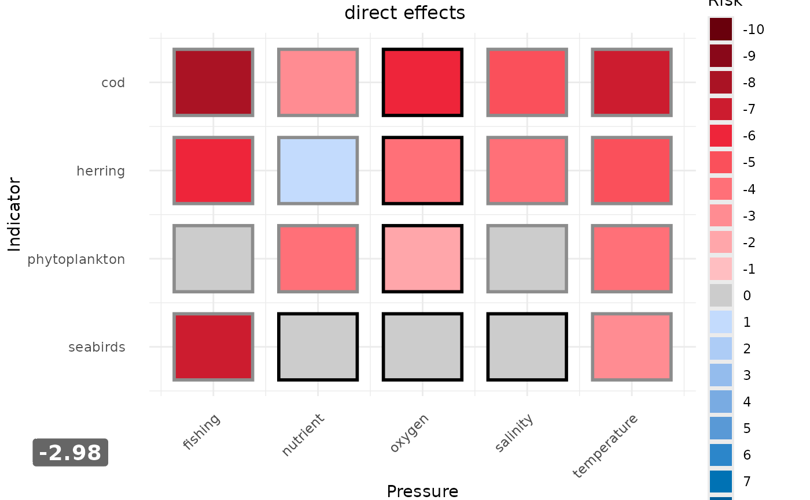
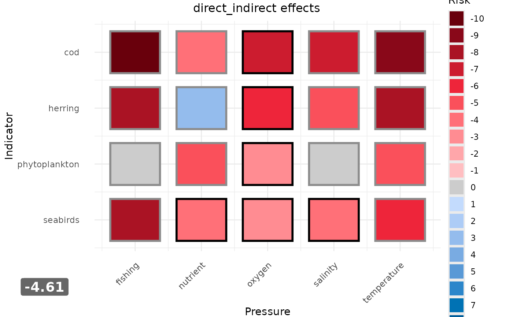

Generate a Heatmap Overview of Individual Risk Scores, Aggregated Risk Scores, and Overall Ecosystem Risk
Source:R/plot_heatmap.R
plot_heatmap.RdThe function plot_heatmap() creates for each effect type an aggregated plot
with a heatmap of the risk scores of each state indicator - pressure combination.
The aggregated multi pressure and multi state indicator scores are shown
to the left and below the heatmap. In the bottom left corner the ecosystem
risk is displayed. Uncertainty can be plotted as frame of the heatmap tiles on a gray scale.
Usage
plot_heatmap(
risk_scores,
aggregated_scores,
order_ind = NULL,
order_press = NULL,
pathway = "combined",
uncertainty = TRUE,
output_2_pathway_indicators = NULL,
title = NULL,
risk_scale_steps = 1,
text_size_axis_text = NULL,
text_size_axis_title = NULL
)Arguments
- risk_scores
output from the
riskfunction.- aggregated_scores
output from the
aggregate_riskfunction.- order_ind
character value defining the order of state indicators shown on the y-axis from top to bottom. If
NULL(default), order is alphabetic.- order_press
character value defining the order of pressures shown on the x-axis from left to right. If
NULL(default), order is alphabetic.- pathway
a character string specifying the pathway which should be used for the multi pressure and multi indicator scores. Default is "combined".
- uncertainty
logical, determines whether uncertainty should be plotted or not, if uncertainty scores are provided by the risk scores. Default is
TRUE.- output_2_pathway_indicators
Optionally. An integer value specifying whether for those state indicators that have been assessed with both pathways two plots should generated, one for each pathway (
2), or only one plot, where the risk scores are averaged from both pathways (1). The default isNULL.- title
a string specifying the title of the heatmap. If
NULL(default), the type of the output data frame from theriskfunction is displayed.- risk_scale_steps
integer value representing the step size for the risk scale in the legend. Can only take the value 1 (default), 2 and 5.
- text_size_axis_text
integer value specifying text size of axis text. If
NULL(default), ggplot2 default settings are used.- text_size_axis_title
integer value specifying text size of axis title. If
NULL(default), ggplot2 default settings are used.
See also
risk, aggregate_risk to generate result tables/output
that serve here as input.
Examples
### Demo with output data from the risk() and aggregate_risk() functions
# based on expert scores.
# Using default settings for the overall risk scores and associated uncertainty
# scores (i.e. in this case, combined across both types)
p_heat <- plot_heatmap(
risk_scores = ex_output_risk_expert,
aggregated_scores = ex_output_aggregate_risk_expert
)
# For each type in both input datasets, a heatmap is generated
p_heat[[1]] # display direct effects

p_heat[[2]] # display direct/indirect effects

# The following examples can run for a longer time, thus they are in dontrun{}.
# Hide uncertainty results and order indicators and pressures manually
if (FALSE) { # \dontrun{
p_heat_mod <- plot_heatmap(
risk_scores = ex_output_risk_expert,
aggregated_scores = ex_output_aggregate_risk_expert,
order_ind = c("phytoplankton", "herring", "cod", "seabirds"),
order_press = c("temperature", "salinity", "oxygen", "nutrient",
"fishing"),
uncertainty = FALSE
)
p_heat_mod[[1]]
} # }
### Demo with combined expert-based and model-based pathways
if (FALSE) { # \dontrun{
combined_risk <- rbind(ex_output_risk_expert, ex_output_risk_model)
aggr_risk <- aggregate_risk(risk_results = combined_risk)
# Default settings (combined type and pathway)
p_heat_comb <- plot_heatmap(
risk_scores = combined_risk,
aggregated_scores = aggr_risk
)
p_heat_comb[[1]]
} # }
### Demo with two indicators assessed with both pathways
if (FALSE) { # \dontrun{
risk_model <- ex_output_risk_model[c(1, 3, 5, 7, 8, 9, 12, 14:16), ]
risk_model$pressure <- c(
"nutrient", "temperature", "salinity", "oxygen", "fishing", # for zooplankton
"nutrient", "temperature", "salinity", "oxygen", "fishing") # for cod
dummy_model <- risk_model |>
dplyr::mutate(indicator = dplyr::case_when(
indicator == "zooplankton_mean_size" ~ "phytoplankton",
.default = "cod"
))
} # }
if (FALSE) { # \dontrun{
risk_comb <- rbind(ex_output_risk_expert, dummy_model)
aggr_risk_comb <- aggregate_risk(risk_results = risk_comb)
# show results from both types and pathways individually and order the state
# indicators manually
p_heat_2_paths <- plot_heatmap(risk_scores = risk_comb,
aggregated_scores = aggr_risk_comb,
output_2_pathway_indicators = 2,
order_ind = c("phytoplankton", "herring", "cod", "seabirds"))
p_heat_2_paths
# show one plot per type and average across the pathways
p_heat_mean_path <- plot_heatmap(risk_scores = risk_comb,
aggregated_scores = aggr_risk_comb,
output_2_pathway_indicators = 1,
order_ind = c("phytoplankton", "herring", "cod", "seabirds"))
p_heat_mean_path
} # }